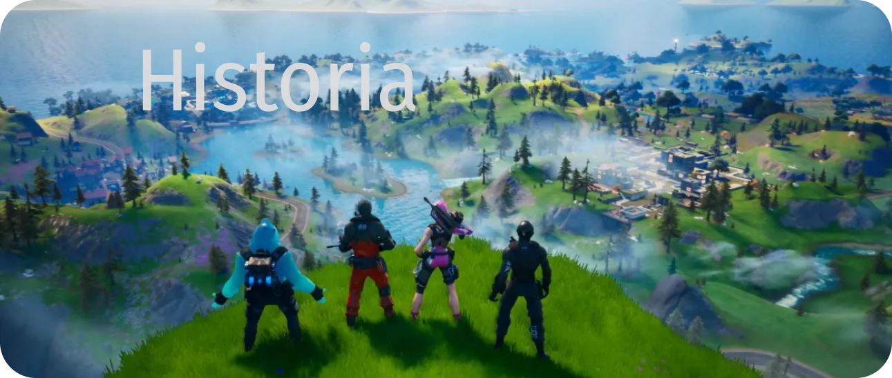

Historia
Fortnite es un videojuego del año 2017 desarrollado por la empresa Epic Games lanzado como diferentes paquetes de software que presentan seis diferentes modos de juego, pero que comparten el mismo motor de juego y mecánicas. Fue anunciado en los premios Spike Video Game Awards en 2011.
Los modos de juego publicados en 2017 incluyen Fortnite: Battle Royale, un juego gratuito donde hasta cien jugadores luchan en una isla con armas y materiales de construcción que se van encontrando a lo largo de la partida, el último en quedar vivo es el ganador, y mientras transcurre la partida el mapa se hace más pequeño debido a la tormenta, y Fortnite: Salvar el mundo, un juego cooperativo y de pago de hasta cuatro jugadores que consiste en luchar contra criaturas parecidas a zombis, utilizando objetos, mejoras y fortificaciones.
También existe el Modo Creativo donde los jugadores pueden crear sus propias islas y jugar a las de los otros jugadores.
Ambos modos de juego se lanzaron en 2017 (excepto el modo creativo, que fue en 2018) como títulos de acceso anticipado. Salvar el Mundo está disponible solo para Windows, macOS,nota 1 PlayStation 4 y Xbox One, mientras que Battle Royale ha sido publicado también para Nintendo Switch, dispositivos iOSnota 1 y Android,nota 1 así como en PlayStation 5 y Xbox Series X|S.2